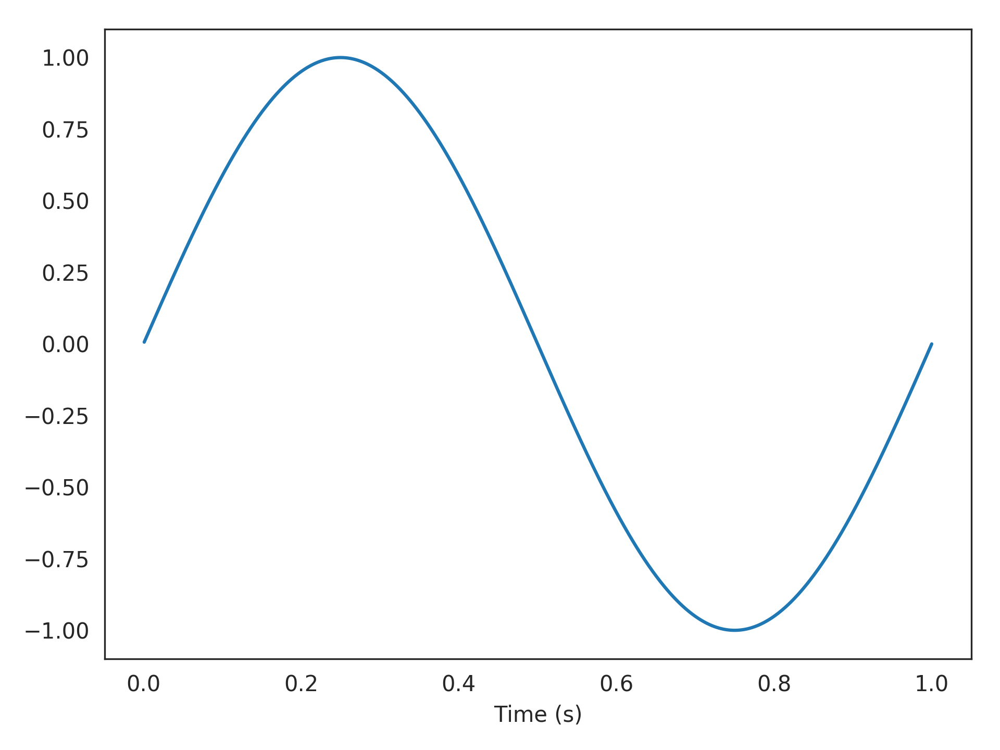

nengolib.processes.Callable¶
-
class
nengolib.processes.Callable(func, default_dt=0.001, seed=None)[source]¶ Adapter to convert any callable into a
nengo.Process.Parameters: func :
callableA function that can be called with a single float argument (time).
default_dt :
float, optionalDefault time-step for the process. Defaults to
0.001seconds.seed :
integer, optionalSeed for the process.
See also
Examples
Making a sine wave process using a lambda:
>>> from nengolib.processes import Callable >>> process = Callable(lambda t: np.sin(2*np.pi*t))
>>> import matplotlib.pyplot as plt >>> plt.plot(process.ntrange(1000), process.run_steps(1000)) >>> plt.xlabel("Time (s)") >>> plt.show()
Methods
apply(x[, d, dt, rng, copy])Run process on a given input. get_rng(rng)Get a properly seeded independent RNG for the process step. make_step(shape_in, shape_out, dt, rng)ntrange(n_steps[, dt])Create time points corresponding to a given number of steps. run(t[, d, dt, rng])Run process without input for given length of time. run_steps(n_steps[, d, dt, rng])Run process without input for given number of steps. trange(t[, dt])Create time points corresponding to a given length of time.